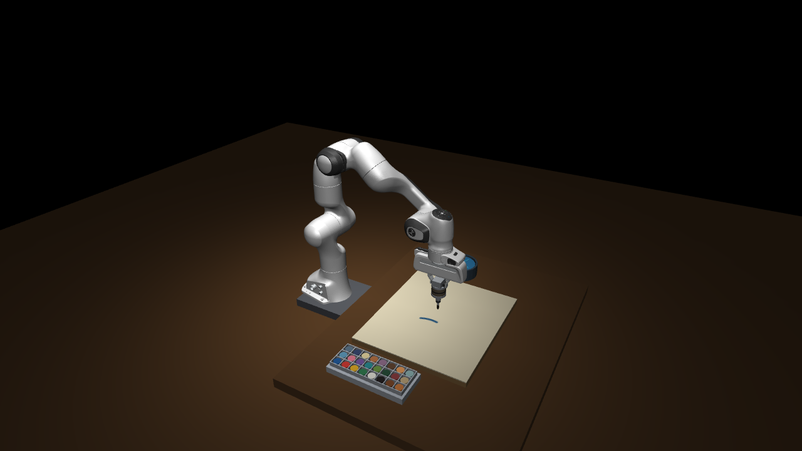
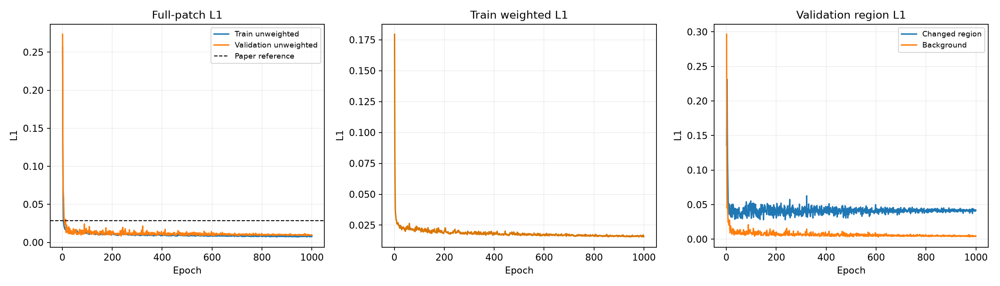
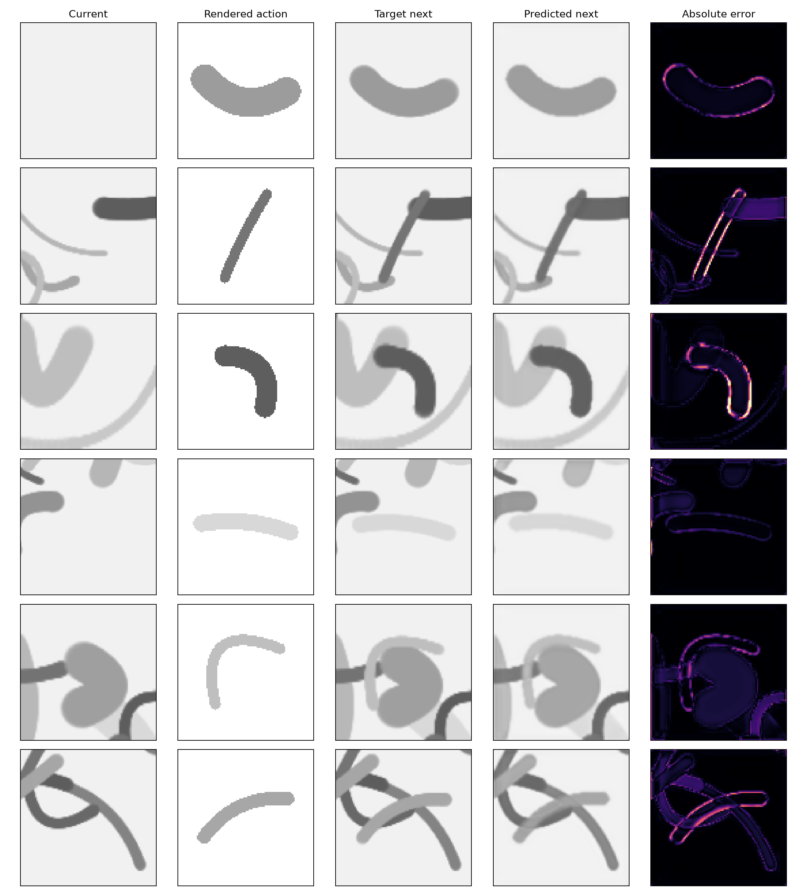
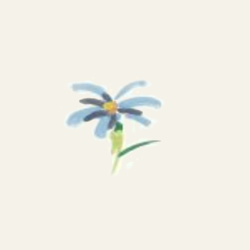
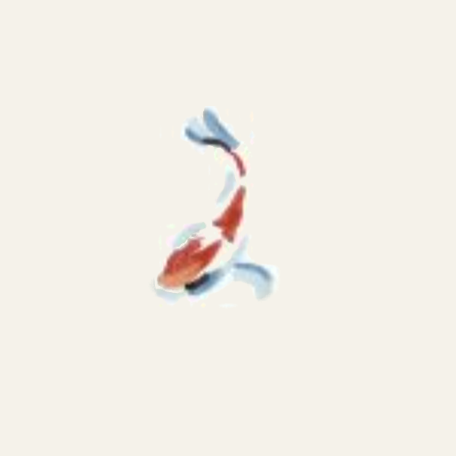
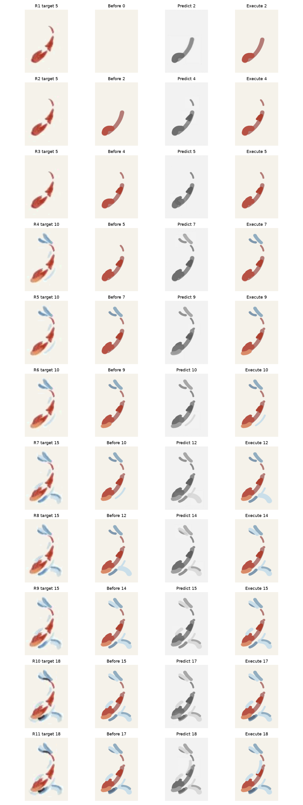

从仿真接触到闭环绘画的三阶段复现
对 Integrating Model-Based Planning with Learned Dynamics Models for Robotic Oil Painting Reproduction 的本地、可审计复现。最终展示版本保留 1107014 corrected baseline，并移除了后续没有稳定改善画面的通用规划优化。
最终版本与结果锚点
最终提交是只修复诊断错误的 1107014 baseline。修复只影响 seed mask/provenance 的同步，绘画 actions 与输出画面保持不变。
| 结果图 | SHA-256 |
|---|---|
| Flower | 39eaea974389a26ee7bd22cb7ade938d247d97df0630650f5ad1d6392ca17b65 |
| Fish | e524d3d1c61a154684a28eb0fea1bdab4d72a084dcad3470807d0c4d8373b4db |
01 · 仿真环境与力控
场景包含 Franka Panda、18×21 inch 画布、24 色槽、清洗器、短笔安装件和顶视相机。画布由实际笔尖位置、接触力和载漆状态实时更新；仿真不加入真实时间等待，环境可并行。
| 指标 | 结果 | 说明 |
|---|---|---|
| 物理步长 / 控制周期 | 2 ms / 4 ms | MuJoCo 3.15.0 |
| 法向力 RMSE | 0.0166 N | 目标力 0.6 N |
| 接触比例 | 1.000 | 9 笔验收全程接触 |
| 静态 IK 最大误差 | 0.0488 mm | 48 次工位访问验收 |
| 仿真倍率 / 并行加速 | 9.28× / 3.53× | 无渲染 / 4 进程 |



02 · 学习前向动力学
按论文报告规模完成 10 个 episode、1000 条 transition 的模拟 self-play，按 episode 划分 900/100。使用带动作嵌入的 U-Net 预测下一时刻局部灰度图像。
| 配置 | 值 | 配置 | 值 |
|---|---|---|---|
| 网络通道 | [32, 64, 128, 256] | 参数量 | 999,361 |
| epochs / batch | 1000 / 120 | 最佳 epoch | 236 |
| Validation L1 | 0.008487 | Changed-region L1 | 0.028098 |
| Checkpoint | 831ea440fd73c275e350e65cca236598b5aff4b5a1b4ba74a646a58744799d35 | ||


阶段 2 的 L1 低于论文参考值，但数据来自不同的本地仿真分布，不能解释为严格的跨数据集优越性。
03 · MPC 闭环绘画
单笔使用 H=1；Flower/Fish 使用 H=5，每轮执行最多两笔后重新观察和规划。规划采用 PCA–RANSAC 初始化、elite softmax 的 MPPI 风格更新和 CMA 风格协方差自适应。本项目没有实现或比较论文 baseline。
Flower
| 目标 / 执行 | 17 / 17 笔 | 重规划轮数 | 10 |
|---|---|---|---|
| Weighted gray L1 | 0.014945 | Changed-region L1 | 0.062027 |
| 预测–执行 L1 | 0.000363 | 力 RMSE | 0.00843 N |



Fish
| 目标 / 执行 | 18 / 18 笔 | 重规划轮数 | 11 |
|---|---|---|---|
| Weighted gray L1 | 0.014755 | Changed-region L1 | 0.079547 |
| 预测–执行 L1 | 0.000312 | 力 RMSE | 0.02453 N |



2× 完整绘画过程
以下视频以仿真时间采样后按 2× 播放速度导出。合集按 Flower → Fish 顺序展示，另有单独版本。
对齐范围与复现边界
对齐项包括 Panda、画布尺寸、24 色槽、短笔安装结构拓扑、二次 Bézier 笔画、接触驱动画布更新、1000 条 self-play、U-Net 训练协议、H=5、两笔执行、PCA–RANSAC、MPPI 风格更新和 CMA 风格自适应。
论文未公开完整 CAD、真实材料常数、真实 self-play 数据、逐笔 action、颜料 patch 数据库、完整 MPC 超参数和官方代码。本地仿真中的接触、刷毛柔顺、颜色沉积和清洗过程是明确记录的工程替代模型。